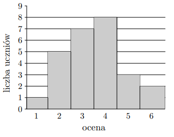
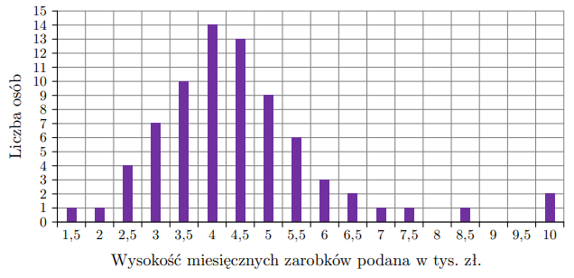
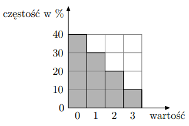

Średnia arytmetyczna zestawu danych: 2,4,7,8,9 jest taka sama jak średnia zestawu: 2,4,7,8,9,x. Wynika stąd, że:
Suma 5 liczb = 30, średnia = 6.
Nowy zestaw: \(\tfrac{30+x}{6}=6\).
\(30+x=36 \implies x=6\).
Odp.: D.
Zad. 17
(czerwiec 2014 - zad. 15)
Średnia arytmetyczna liczby punktów uzyskanych na egzaminie przez studentów I grupy, liczącej 40 studentów, jest równa 30. Dwudziestu studentów tworzących II grupę otrzymało w sumie 1800 punktów. Zatem średni wynik z tego egzaminu, liczony łącznie dla wszystkich studentów z obu grup, jest równy:
I grupa: \(40 \cdot 30 = 1200\).
II grupa: 1800.
Łącznie: 3000 punktów, 60 osób.
Średnia = \(3000 : 60 = 50\).
Odp.: C.
Zad. 18
(czerwiec 2013 - zad. 22)
Wyniki sprawdzianu z matematyki są przedstawione na poniższym diagramie.

Średnia ocen uzyskanych przez uczniów z tego sprawdzianu jest równa:
Z diagramu obliczamy średnią (waga × wartość / suma wag).
Obliczenia dają średnią \(3,5\).
Odp.: C.
Zad. 19
(sierpień 2011 - zad. 18)
Średnia arytmetyczna sześciu liczb: 3, 1, 1, 0, x, 2 jest równa 2. Wtedy liczba x jest równa:
Na wykresie słupkowym poniżej podano rozkład miesięcznych zarobków pracowników firmy F.

Oblicz średnią miesięcznego wynagrodzenia netto wszystkich pracowników firmy F. Wynik podaj bez zaokrąglania.
Z wykresu obliczamy sumę iloczynów wartości i liczności.
Suma wartości = 4,48 × liczba pracowników.
Średnia wynosi dokładnie 4,48 tys. zł.
Odp.: 4,48.
Zad. 24
(informator CKE)
Średnia arytmetyczna danych przedstawionych na diagramie częstości jest równa:

Na podstawie diagramu liczmy średnią ważoną.
Wychodzi dokładnie 1.
Odp.: A.
Zad. 25
(zbiór CKE - zad. 61)
Średnia wieku czterech kobiet jest równa 24. Średnia wieku sześciu mężczyzn jest równa 26. Średnia wieku tych dziesięciu osób jest równa: